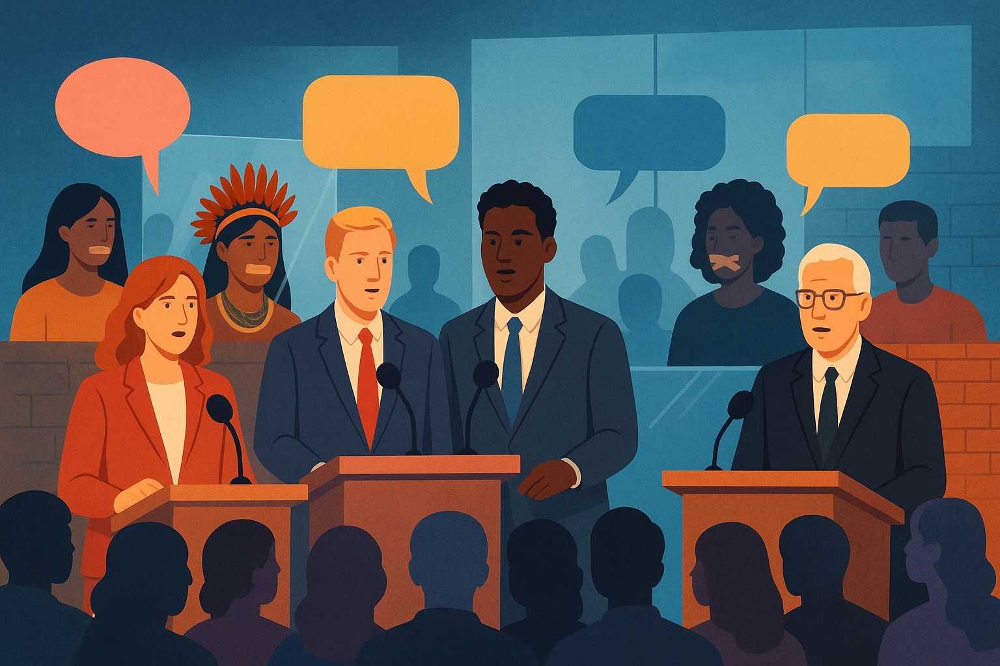

Ideologia e Representação: Quem fala? Quem é silenciado?
A linguagem não é apenas um meio de comunicação: ela também é um instrumento de poder. Em diferentes contextos sociais, políticos e culturais, certos grupos têm mais espaço para se expressar, enquanto outros permanecem silenciados ou representados de forma distorcida. Esse processo revela como a ideologia atua na construção dos discursos, determinando quem pode falar, quem é ouvido e quem é invisibilizado.
Representação e exclusão nos discursos públicos
Os discursos públicos – veiculados pela mídia, pela política, pela escola ou pelas redes sociais – não são neutros. Eles refletem relações de poder que privilegiam determinados grupos sociais em detrimento de outros:
- Mulheres: retratadas em papéis secundários, ligados ao espaço doméstico e ao cuidado. Ainda hoje sofrem com estereótipos de fragilidade ou inferioridade.
- Povos indígenas: muitas vezes reduzidos a imagens folclóricas ou romantizadas, apagando sua diversidade cultural e suas lutas sociais contemporâneas.
- Minorias raciais: frequentemente associadas a estigmas de marginalidade ou exotismo, silenciando a riqueza de suas culturas e experiências.
- Grupos periféricos: aparecem quase sempre em contextos de violência ou carência, invisibilizando sua produção cultural, política e artística.
Mecanismos linguísticos que constroem estereótipos
A linguagem é uma ferramenta sutil, mas poderosa, para reforçar desigualdades. Alguns mecanismos comuns incluem:
- Generalizações: transformar características individuais em estigmas coletivos, como em “os jovens da periferia são violentos”.
- Eufemismos e apagamento: suavizar problemas graves, como dizer “conflito cultural” em vez de “genocídio indígena”.
- Voz passiva: “erros foram cometidos” apaga os responsáveis, diluindo a responsabilidade histórica.
- Nomeações desiguais: usar termos depreciativos (“índio”, “favelado”) enquanto outros recebem títulos de prestígio (“doutor”, “autoridade”).
- Silenciamento por omissão: ausência de determinados grupos em livros, notícias e debates, tornando-os invisíveis.
A importância da escuta e da ressignificação
Para superar os silenciamentos e estereótipos, é fundamental abrir espaço para que esses grupos possam falar por si mesmos, construindo suas próprias narrativas. A escuta ativa, a valorização das diferenças e o questionamento crítico das ideologias naturalizadas na linguagem são passos essenciais para uma sociedade mais justa e plural.